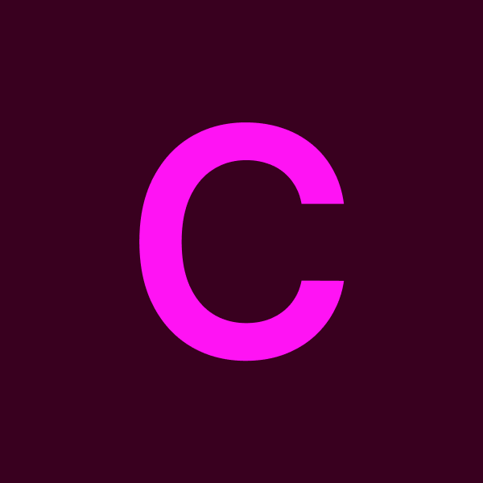

C Stands for Corporation! Albertsons, Aetna, Toyota

Team
Alicia Rizo-Liu, Annette Hui, Dev Gupta, Gabrielle Kinderknecht, Madeline Cedillo, Sam Dayoub
A collection of design systems work for major corporate clients, spanning illustration libraries, icon sets, and brand assets built to scale.
Each client brought its own design language and constraints — the work here shows how a consistent design system can flex across very different corporate identities.
Albertsons
Albertsons, a prominent grocery chain in the south, sought to enhance its design system with a rebrand and updated illustrations for their app. Leveraging their extensive illustration library, which captured various shopping experiences, I revitalized the design by creating a clean fresh look while maintaining alignment with the brand's existing identity.

Logos
Because of the rebrand, three new logos were designed to represent the creative teams. They had to be systematic and visually together.


Banners
Banners were made for each section in Albertsons's Design Kit. Each one takes in some hand drawn aspects from marketing and their corporate illustration style.


Icons & Illustrations
Numerous custom icons were developed for their mobile app. New ones had to be developed as new components were being updated into their system.


Built-in Animations
Animations were added on to the shopping experience. Here is an example of a celebratory animation concept built into the app.

Graphics
Apart from branding the design kit, the in-house Albertsons design team needed help with internal assignments, one of which was personas and how people navigate their shopping experience throughout the store. Here are personas and graphics made to support them.


Aetna
Aetna's infographics serve as tools for educating their internal team about healthcare-related topics. These graphics are designed with a keen focus on two key aspects: hierarchy and balancing information-heavy data. One notable challenge was ensuring that each infographic has unique layouts while being cohesive as a whole. To address this, strict guidelines were established for type styles, icon usage, and illustrations.


Toyota
Toyota's team needed a scalable set of road condition icons for their vehicle screens and vehicle line art for their internal documents.